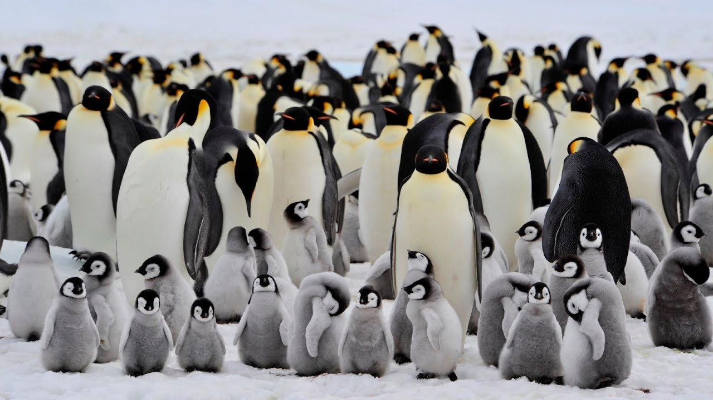

IL PINGUINO IMPERATORE
Il pinguino imperatore è il simbolo indiscusso dell’Antartide.
Vive sopportando le freddissime temperature che possono raggiungere fino ai -60°.
Tuttavia, i cambiamenti climatici e la presenza dell'uomo minacciano la sua esistenza.
Ad oggi, nel continente si contano circa una quarantina di colonie di questa specie a rischio di estinzione.
Il previsto aumento di altri 2° porterebbe ad una ulteriore diminuzione di oltre il 50% delle colonie esistenti.
UNA SPECIE DA TUTELARE
- Dove?

- Perchè?
Due terzi delle colonie di pinguini imperatori in Antartide rischiano l'estinzione
a causa del riscaldamento globale che modifica la quantità di ghiaccio marino.
- Conseguenze: la sopravvivenza dei pinguini imperatori è
strettamente legata alla presenza di ghiaccio marino nel loro habitat.
Se questo scarseggia, scarseggiano anche le loro principali fonti di nutrimento.
Se il ghiaccio è sovrabbondante, i pinguini devono compiere lunghi viaggi per raggiungere il mare e cacciare il cibo per i loro pulcini.
Il riscaldamento globale è capace di alterare questo delicato equilibrio rendendo impossibile la vita di questi pennuti.
- Come salvarli: puoi proteggerli dall'estinzione facendo donazioni alle associazioni per la salvaguardia degli animali adottando un pinguino.

Il pinguino imperatore, uccello endemico dell'Antartide, è il più grande e il più pesante tra tutti i pinguini.
Maschi e femmine hanno le stesse dimensioni: un'altezza che può raggiungere i 125 cm e un peso compreso tra i 20 e i 40 kg.
Dorso e testa sono neri e il ventre è bianco, mentre la parte alta del petto è color giallo chiaro e ha
due macchie giallo brillante a livello delle orecchie. Come gli altri pinguini, anch'esso è incapace di volare.
Le sue ali rigide e appiattite e il corpo affusolato sono particolarmente adatti all'ambiente marino.
La sua dieta è costituita essenzialmente da pesci, ma può comprendere anche crostacei.
Mentre caccia, può restare sott'acqua anche 20 minuti, immergendosi fino a una profondità di 600 m in quanto possiede un'emoglobina dalla struttura particolare
in grado di operare con bassissimi livelli di ossigeno.
Il pinguino imperatore è noto per il ciclo vitale ben regolato, con gli adulti che ripetono ogni anno lo stesso rituale per riprodursi e allevare i propri piccoli.
È la sola specie di pinguino che si riproduce nel corso dell'inverno antartico. Maschi e femmine effettuano un lungo viaggio sul ghiaccio di 50-100 km per formare
delle colonie che possono comprendere migliaia di individui. Le femmine depongono un unico uovo, poi lasciano al maschio il compito della cova e tornano verso il mare in cerca di nutrimento.
Successivamente, le femmine torneranno alla colonia, e allora saranno i maschi a dirigersi verso il mare, mentre le femmine rimangono insieme al pulcino.
I genitori continueranno a fare la spola per l'approvvigionamento fino al termine delle cure parentali. L'aspettativa di vita del pinguino imperatore è generalmente di 20 anni in natura,
ma alcune osservazioni lasciano pensare che certi individui possano raggiungere i 50 anni di età.